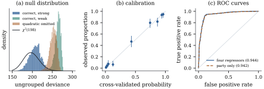

35.4 Goodness of fit
In the normal linear model the residual sum of
squares both estimates
35.4.1. Two statistics for grouped data
For grouped binomial data
with the convention
(a) (Grouped data.) Fix
(b) (Ungrouped data, canonical link.) If
The deviance is therefore a function of the fitted probabilities alone: it does not depend on which observations were successes, it is bounded above by
(c) (Differences.) For nested models
Proof.
(a) The statement about
(b) Write
(c) The saturated log-likelihood is common to both deviances and cancels, so the difference is twice a log-likelihood ratio between two nested smooth models with
Collapse the survey of Example (Voting intention in the 1996 American election)
onto its seven party groups, of between
import numpy as np
import pandas as pd
import statsmodels.api as sm
from scipy import stats
anes = sm.datasets.anes96.load_pandas().data
cells = anes.groupby("PID")["vote"].agg(["sum", "count"]).reset_index()
counts = np.column_stack([cells["sum"], cells["count"] - cells["sum"]])
Xg = sm.add_constant(cells[["PID"]])
g = sm.GLM(counts, Xg, family=sm.families.Binomial()).fit()
print(cells.to_string(index=False))
print(f"deviance {g.deviance:.3f} on {g.df_resid} df, p = {stats.chi2.sf(g.deviance, g.df_resid):.4f}")
print(f"Pearson {g.pearson_chi2:.3f} on {g.df_resid} df, "
f"p = {stats.chi2.sf(g.pearson_chi2, g.df_resid):.4f}")The conditions in part (a) are not decoration. If
35.4.2. The ungrouped deviance measures nothing
Eq. 35.4.2
deserves to be read twice. The left-hand side looks like
a discrepancy between data and fit; the right-hand side
contains no data at all. It is twice the total Bernoulli
entropy of the fitted probabilities, a measure of how
undecided the model is: probabilities near
Simulate
| data-generating mechanism | mean deviance | standard deviation |
|---|---|---|
| correct, strong slope | 206.8 | 14.3 |
| correct, weak slope | 263.6 | 7.0 |
| quadratic omitted | 252.2 | 8.5 |
Two correct models with the same
The survey model of Example (Voting intention in the 1996 American election)
has ungrouped deviance
# the ungrouped deviance is a function of the fitted probabilities alone
X = pd.DataFrame({"const": 1.0, "PID": anes["PID"], "age": anes["age"] / 10,
"educ": anes["educ"], "income": anes["income"]})
y = anes["vote"].to_numpy()
fit = sm.GLM(y, X, family=sm.families.Binomial()).fit()
p = fit.fittedvalues.to_numpy()
entropy = -2 * np.sum(p * np.log(p) + (1 - p) * np.log(1 - p))
print("deviance reported ", round(fit.deviance, 6))
print("entropy of the fit ", round(entropy, 6))def deviance_null(n, B, seed=0):
"""Ungrouped deviances under three data-generating mechanisms: a correct model with a
strong slope, a correct model with a weak slope, and a model that omits a real quadratic
effect. All three fit an intercept and one slope to n observations."""
rng = np.random.default_rng(seed)
out = np.empty((B, 3))
for b in range(B):
x = rng.normal(size=n)
Z = np.column_stack([np.ones(n), x])
for j, eta in enumerate([0.4 + 1.5 * x, 0.4 + 0.3 * x, 0.4 + 1.5 * x - 1.8 * x ** 2]):
yb = (rng.random(n) < 1 / (1 + np.exp(-eta))).astype(float)
out[b, j] = sm.GLM(yb, Z, family=sm.families.Binomial()).fit().deviance
return out
demo = deviance_null(200, 100, seed=1)
print("n = 200 and p = 2, so a chi-squared reference would have mean 198 and "
f"standard deviation {np.sqrt(2 * 198):.1f}")
for j, label in enumerate(["correct, strong slope", "correct, weak slope ",
"quadratic omitted "]):
print(f"{label}: mean {demo[:, j].mean():6.1f}, "
f"standard deviation {demo[:, j].std():4.1f}")
The Pearson statistic escapes Eq. 35.4.2, since
35.4.3. Grouping by fitted values
Hosmer and Lemeshow (1980) proposed making grouped
data out of ungrouped: sort by
For the four-regressor model of Example (Voting intention in the 1996 American election):
| groups |
||
|---|---|---|
| 8 | 8.670 | 0.193 |
| 10 | 12.232 | 0.141 |
| 12 | 16.119 | 0.096 |
The
def hosmer_lemeshow(y, p, groups):
"""The Hosmer-Lemeshow statistic and its nominal p-value with the given number of groups."""
order = np.argsort(p)
chunks = np.array_split(order, groups)
stat = 0.0
for c in chunks:
e = p[c].sum()
stat += (y[c].sum() - e) ** 2 / (e * (1 - e / len(c)))
return stat, stats.chi2.sf(stat, groups - 2)
for gr in (8, 10, 12):
stat, pv = hosmer_lemeshow(y, p, gr)
print(f"{gr:2d} groups: statistic {stat:6.3f}, p = {pv:.3f}")35.4.4. Calibration and discrimination
Two questions hide inside “does the model fit”.
Calibration asks whether the fitted
probabilities are right: among observations with
Let
Proof. The likelihood equations of
the two-parameter model at
The calibration slope
Let
Proof. Order the distinct score
values downwards. Moving the threshold past one of them
advances the curve by the fraction
So a model whose probabilities are all wrong by a
factor of ten has the same AUC as the correctly
calibrated model with the same ordering. The AUC is
insensitive in the other direction too: for Example (Voting intention in the 1996 American election)
party identification alone gives
35.4.5. Residuals and influence
The diagnostics of Chapter 20 carry over, with the working weights as the metric.
With
By construction
Two things change. For ungrouped data
35.4.6. Exercises
A. Check your understanding
Use Eq. 35.4.2 to find the largest and smallest possible values of the ungrouped deviance of a logistic fit, and describe the fits that attain them.
Solution. Each summand
B. Practice
Show that for ungrouped data
Solution. With
Let
Suppose the covariate is
Solution. The fitted score is
monotone in the covariate, so the AUC is
C. Going deeper
Example (The same model, three verdicts)
shows the Hosmer–Lemeshow statistic moving with the
number of groups. This exercise holds
(a) Show that
(b) Exhibit a grouping giving
(c) Explain why both are legitimate outputs of “sort by
(d) The model in (a) is correct if the successes really are independent with probability
Solution.
(a) With only an intercept,
(b) A grouping in which every group contains five successes has
(c) Every
(d) No. The model is correct, and the whole range from
Proposition 35.4.3
says the AUC ignores calibration. The converse question
is what it measures when calibration holds. Let
(a) Show that the covariate of a uniformly chosen case has law
(b) Writing
(c) Deduce that
(d) Check the formula on the population in which
For a calibrated model the AUC is therefore a measure of how far apart the achievable probabilities are, and nothing else. What does that say about comparing two models by their AUCs?
Solution.
(a)
(b) Independence gives
(c)
(d) Here
Two calibrated models on the same population are
therefore ranked by the spread of their fitted
probabilities, and an AUC that barely moves —